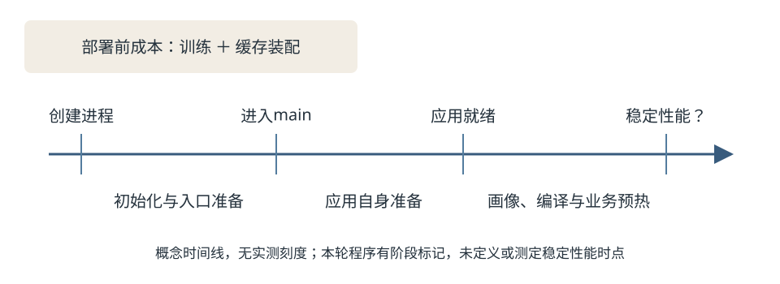

第七篇 · 启动、预热与本地互操作
第31章 提前处理缓存与方法执行画像
缓存转移的是工作和信息。把训练、装配、部署与当前编译分清，才能解释更早就绪的可能来源和剩余的预热成本。
本章基于 Java 开发工具包（Java Development Kit，JDK）25.0.5.0.2 和 OpenJDK HotSpot，Java 虚拟机（Java Virtual Machine，JVM）实现锁定提交 1775ea114f64。规范、源码分析与本机有限观察分别说明。教学源码、运行说明和证据索引可相互定位。
31.1 提前处理的目标
31.1.1 把重复工作向部署前移动
提前处理（Ahead-of-Time，AOT）的关键问题是哪些工作能在代表性训练中做过，并让后续进程安全地复用。类文件读取、解析表示、部分连接结果与方法执行画像属于不同层次。第30章的类数据共享（Class Data Sharing，CDS）提供归档和映射基础；本章再看提前连接及画像，并不把训练进程的全部状态保存为快照。[S01、S02]
解析表示减少重建成本，连接复用减少某些符号处理，画像则帮助决定本次编译的时机与选择。三者的正确性前提不同：类表示需要匹配输入，连接依赖需要仍然成立，历史画像即使真实也可能不再代表当前输入。把它们统称成“提前编译好的程序”，会抹去后续动态加载和即时编译仍存在的事实。
31.1.2 优化启动不等于改变执行模型
本章缓存是供目标HotSpot消费的运行材料。应用仍由Java运行时启动，仍执行Java语义，仍可能解释、编译、去优化和加载训练中没有的类。缓存的价值来自减少重复工作及更早作出部分执行决策，而不是取消运行时。本轮部署日志继续显示CacheJourney::route的编译，是这一区分的可见线索。
缓存不是要求程序变成封闭世界。训练负载越接近业务，越可能覆盖重要路径；但完整覆盖现实输入通常不可保证。评估需要同时解释已复用部分、剩余工作和不兼容回退，不能只展示一个文件生成成功。
31.2 训练运行与缓存生成
31.2.1 训练、装配与部署是不同进程职责
训练运行执行应用，记录可供后续处理的类和运行信息；装配读取配置并生成缓存，不再次执行应用入口；部署映射缓存，再处理本次输入。三个阶段应分别记录输入、资源配置、产物和退出状态。图31-1中的共同应用归档表示训练与部署必须有可追溯关系，不是任意应用都可以使用同一训练文件。

CH31-E01固定一个包含Add与Multiply的应用归档（Java Archive，JAR）。训练只执行Add，生成training.aotconfig，单独装配为cache.aot；部署分别执行Add和Multiply。固定归档内有一个类文件，不等于训练已经加载并画像了那个类。运行说明保留全部命令和文件摘要。
31.2.2 未覆盖路径仍需要工作
本轮Multiply部署中，类加载日志显示它来自cache.jar，而CacheJourney与Add可来自共享文件。Multiply::apply仍产生本次编译活动。这说明未训练路径可以补充加载和编译；没有说明所有动态行为都与缓存兼容，也没有说明旧画像已经完美适应新分布。
类是否进入缓存、某个方法是否具有画像、某一调用点是否见过特定接收者，是三个粒度。即使某类已归档，其方法也可能冷到没有有用画像；即使有画像，部署仍须考虑初始化依赖和实际行为。不能以“归档已含此类”推导该类的全部工作都被提前完成。
31.3 JDK 25 的命令行流程
31.3.1 25版简化的是组织流程
# 完整输入和日志路径见运行说明；以下展示同一应用的三个阶段。
java -Xmx64m -XX:AOTMode=record -XX:AOTConfiguration=training.aotconfig -cp cache.jar org.example.jvminternals.ch31.CacheJourney add
java -Xmx64m -XX:AOTMode=create -XX:AOTConfiguration=training.aotconfig -XX:AOTCache=cache.aot -cp cache.jar
java -Xmx64m -XX:AOTMode=on -XX:AOTCache=cache.aot -cp cache.jar org.example.jvminternals.ch31.CacheJourney add
显式三阶段便于理解和留证。25版还允许训练命令直接给AOTCacheOutput：应用训练结束后，启动第二个虚拟机执行装配，写出缓存并清理临时配置。本轮simple.txt实际记录了子进程路径、缓存大小及临时配置删除。自动化命令把流程衔接起来，没有把装配成本消除，也没有让训练进程本身变成部署进程。[S01]
31.3.2 路径、模式与身份必须一起记录
| 选项 | 本章用途 | 解释边界 |
|---|---|---|
| AOTMode=record | 运行应用并写训练配置 | 需要记录输入负载及正常结束 |
| AOTMode=create | 读配置、写缓存 | 本阶段不运行应用main |
| AOTMode=on | 诊断时明确要求使用兼容缓存 | 不能加载时会失败退出 |
| AOTMode=auto | 默认按可用缓存决定；输出选项可转为训练 | 回退后仍可能正常运行，须查日志 |
| AOTMode=off | 不使用AOT缓存的普通对照 | 不是专门把所有其他执行优化关闭 |
| AOTCacheOutput | 把训练与后续装配串起来 | 不能与AOTCache同时指定 |
本轮缓存为12,058,624字节。大小描述文件，不等于驻留内存，也不是独立可执行文件大小。运行记录将JDK、架构、堆配置、应用归档摘要和缓存摘要绑定；重新打包后必须重新判断旧记录，而不能只保留同名文件路径。训练配置与缓存是编译产物，精选日志随章节保留，大型完整记录在项目artifacts中有摘要与索引。
31.4 画像保存与编译协作
31.4.1 历史画像进入当前编译策略
即时编译（Just-in-Time Compilation，JIT）使用调用频度、分支及接收者等画像作决策。锁定实现以TrainingData关联类、方法和编译经历，MethodTrainingData::prepare保留最终计数与MethodData，dump_training_data写出归档字典。部署根据类和方法身份查找这些数据，而不是把训练时的所有原始地址当成可直接调用的函数入口。[S02]
CompilationPolicy::replay_training_at_init把已初始化的共享类送入重放队列，trained_transition按训练层级、画像是否可用和初始化依赖选择接续路径。默认并不是“类一加载就强制把所有方法编译成最高层级”；AOTCompileEagerly在本提交还是默认关闭的实验选项。本章没有开启它，也没有开启适配器或桩代码缓存的诊断开关。
31.4.2 画像不是应用方法的既有机器码
本轮日志实际出现Replay training: CacheJourney与Add；训练route经历3到4级，缓存部署则观察到2到4级。结合实现分支，可以把这解释为历史训练参与当前分层策略的证据，不能据此推出所有方法跳过固定层级或必有某个加速比例。第16章已经说明层级由条件决定，不能给每个方法画相同必经阶梯。
归档画像提供历史经验，本次运行仍收集信息并验证推测。若当前接收者或依赖发生变化，编译器需要保持Java语义，并可重新画像、重编译或去优化。Multiply路径日志只有加载和编译证据，本章没有取得相应运行陷阱事件，因此不把made not entrant一律写成“触发了类型去优化”。第18章的事件区分继续适用。

31.5 代表性、适用条件与评估
31.5.1 代表性和兼容性是两个问题
相同字节与配置有助于满足缓存兼容条件，代表性则关乎训练是否覆盖真实热点。一个完全兼容的缓存可能只有很少价值；一个覆盖广泛的训练文件也可能因版本、架构、应用或类定义选项变化而无法使用。处理前者要检查业务路径和方法画像，处理后者先看加载和兼容日志，不能混成同一种“未命中”。
本轮只改变正常输入选择：应用归档未变，Multiply作为训练外类从归档文件补充加载。没有修改类字节、注入代理或损坏缓存来制造不兼容。缓存不能加载时auto的回退和on的失败行为来自25版命令契约；故障输出没有在本章冒充实测。
31.5.2 不能用一次总时长代表预热

本章记录进程外time实时间和运行时uptime阶段标记。训练0.73秒、装配0.99秒分别属于部署前成本；无缓存对照入口／就绪为95／114毫秒，缓存部署为64／72毫秒，训练外路径为61／72毫秒。这只是同一机器上的顺序单次记录，日志、调度、文件页缓存及格式化初始化都在其中。没有重复采样、随机顺序、冷缓存控制或稳定性能判据，不计算提升百分比。[O01]
示例的“就绪”只表示操作对象创建完毕，不代表网络服务已经监听或满足业务服务等级；60,000次有限请求只让编译活动可见，不测吞吐。正式评估应分别定义创建到入口、入口到真实可服务、达到稳定指标的时点，并把训练、存储及部署成本算清。第36章综合案例负责扩展测量方法，本章不以短程序结束时刻替代稳定期。
31.6 与独立本地可执行文件的边界
31.6.1 看产物、依赖和动态能力
独立本地可执行文件路线通常由另一套工具链产生操作系统可执行产物，其运行时组成和动态能力需要按那套工具链核对。本章的.aot文件既不替代应用归档，也不代替java启动器；它与目标运行时和兼容输入共同工作。不要仅因名称含AOT就认为产物、编译时机与部署方式相同。

31.6.2 把结论限定到实际配置
本书分析的是锁定HotSpot缓存、类连接与方法画像路径。提交中存在额外的适配器／桩缓存诊断选项，不等于本例开启，更不等于应用方法已成为可以脱离JDK运行的本地代码。本章未构建或运行其他本地可执行文件工具链，也不从未做的对照宣称哪条路线更快、更小或更安全。
回到核心问题：复用的可以是类表示、部分连接和历史画像；剩下的是当前输入、未训练路径、可变状态与本次代码生成。要说明一个缓存部署，至少同时给出“复用了什么”“还在做什么”“什么变化会使它无效”这三组证据。
观察与边界
| 阶段 | 实际观察 | 证据解释 |
|---|---|---|
| 训练Add | 生成训练配置，route出现3、4级编译 | 执行应用并记录历史 |
| 装配 | 写出12,058,624字节缓存；训练字典包含方法／编译数据 | 独立进程，无CH31入口标记 |
| 部署Add | 共享类、画像重放、route出现2、4级编译 | 仍有本次编译 |
| 部署Multiply | Multiply来自cache.jar，当前编译apply | 未训练路径仍被处理 |
完整命令、初次未引用星号导致的shell拒绝、首次编译输出交错及改用独立日志的理由均在运行记录。失败命令没有产生训练文件，不记为运行成功；后续有效采集保持相同源码。
回顾与思考
- 训练类已进入缓存，为什么其方法仍可能需要画像和本次编译？
- auto回退后应用正常运行，能否证明正在使用缓存？
- 训练成本、入口时间、就绪时间和稳定性能应如何分别记账？
这一章解决跨运行复用的信息边界；下一章转向同一次进程中Java与本地代码的资源边界。
来源与实现入口
- S01：25版java命令的AOT缓存章节，训练、装配、模式与自动子进程。
- S02：锁定cds/cdsConfig.cpp的check_aot_flags、setup_compiler_args；oops/trainingData.cpp的MethodTrainingData::prepare、dump_training_data；compiler/compilationPolicy.cpp的replay_training_at_init及trained_transition系列。精确路径、符号与选定原文见本章证据索引。
- S03：25版迁移说明用于版本主题定位；本轮增强提案网页返回403，技术细节以实际命令文档、锁定实现和运行记录为依据。
- O01：本章ch31-20261103-01训练、装配、部署及画像重放的实际输出；时间只描述该次条件。